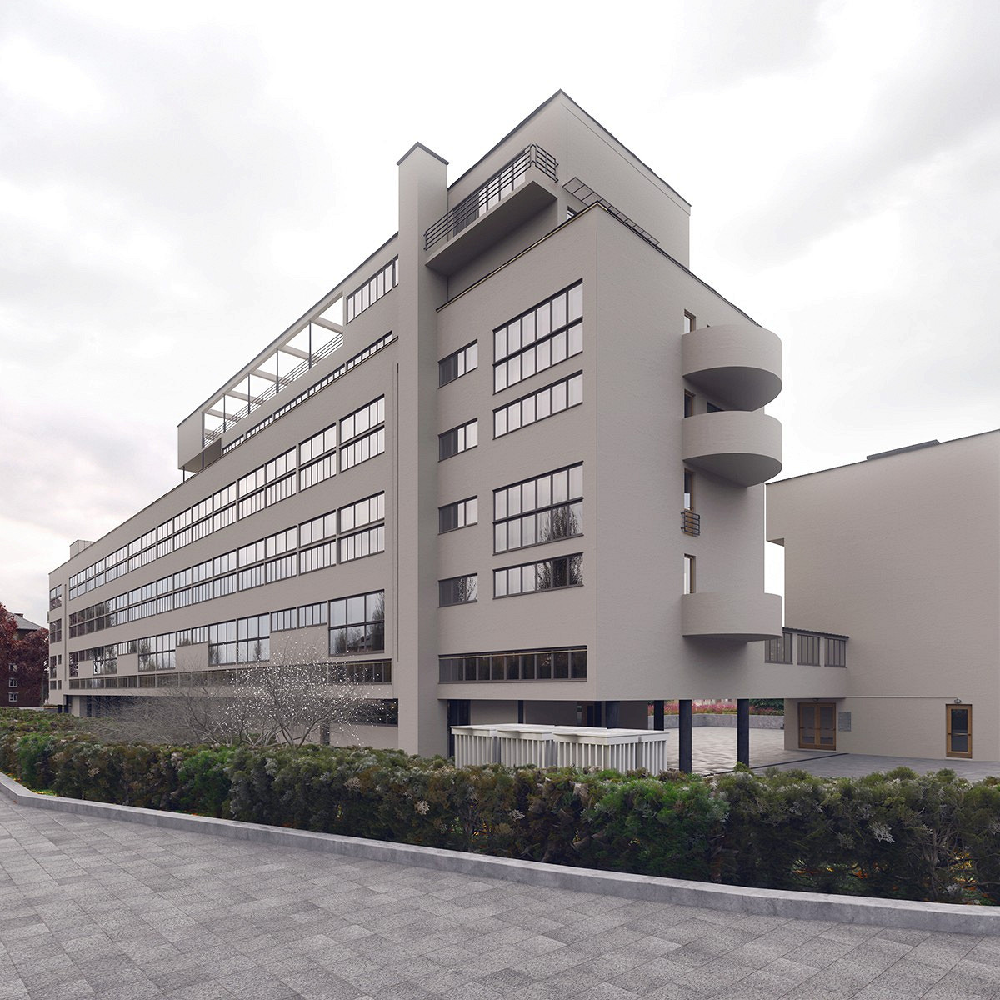
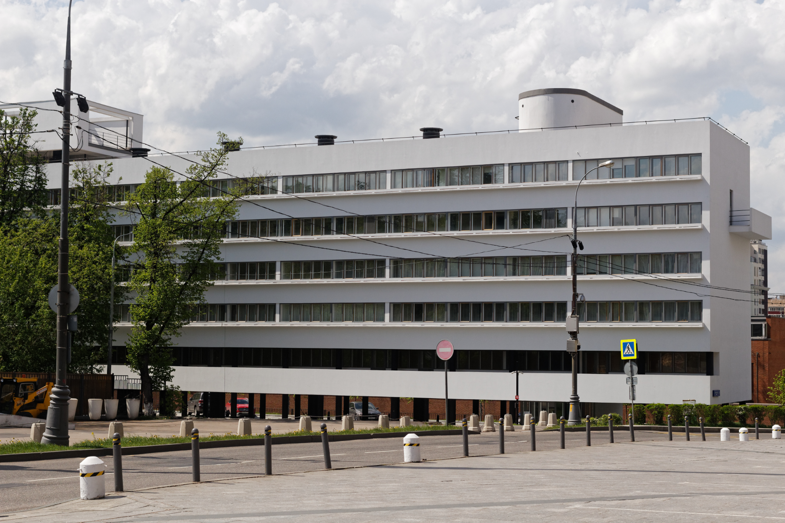
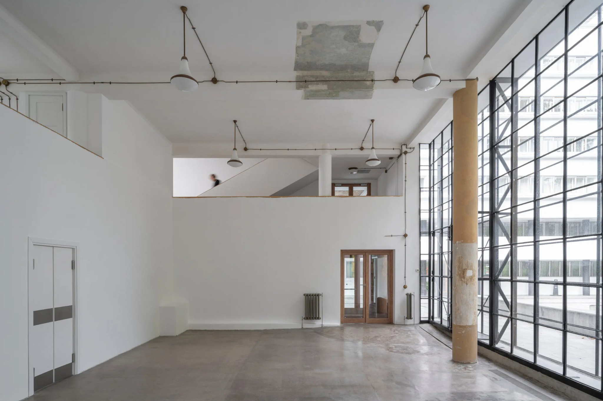

Дом Наркомфина в Москве — памятник советского конструктивизма, построенный в 1928–1930 годах. Над проектом работали архитекторы Моисей Гинзбург и Игнатий Милинис, инженер Сергей Прохоров. Экспериментальный характер здания проявился в его конструкции, освещении и оформлении интерьеров.

Жилой корпус расположен в глубине участка. Перпендикулярно ему стоит коммунальный корпус, соединённый с квартирами крытым переходом. Отдельное здание прачечной находится ближе к Новинскому бульвару.
Парк задумывался как часть ансамбля. Чтобы здание не разрывало зелёную территорию, жилой корпус подняли на круглых опорах, сохранив возможность прохода под ним.
Характерные особенности дома:

Расположение помещений учитывало движение солнца: спальни получали утренний свет, гостиные — вечерний. Ленточные окна помогали равномерно освещать комнаты.
Цветовые решения разрабатывались при участии Хиннерка Шепера и Эрика Борхерта. Вместо обоев использовали окраску стен. Для тёплой гаммы выбирали лимонно-жёлтые и охристые оттенки, для холодной — голубые и зеленоватые.
Цвет служил инструментом изменения восприятия пространства.

За десятилетия эксплуатации дом подвергся многочисленным переделкам. Реставрация 2016–2020 годов восстановила утраченные архитектурные элементы и историческую окраску.
Специалисты сохранили часть оригинальных оконных створок, восстановили детали кровли и интерьеров. Здание сохранило жилую функцию.